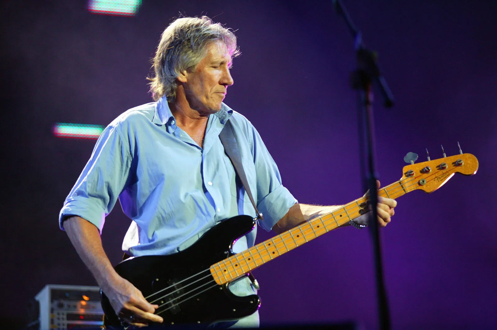
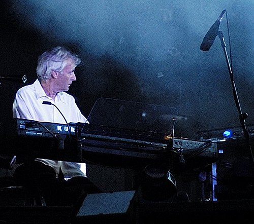
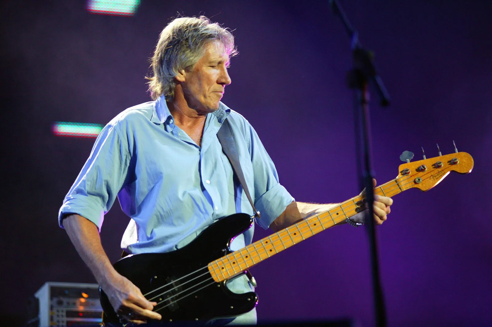
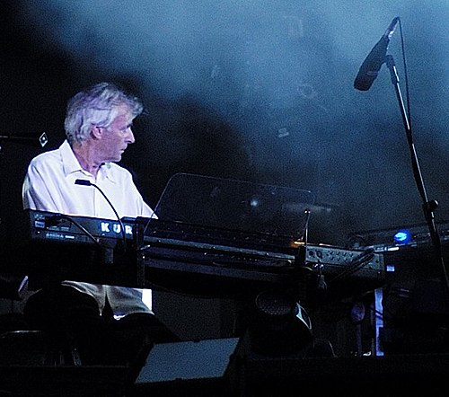
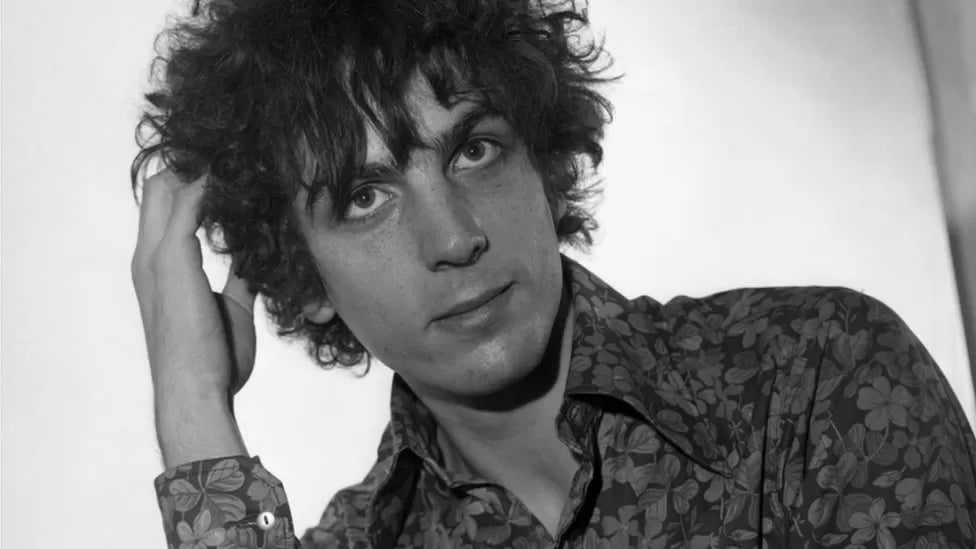
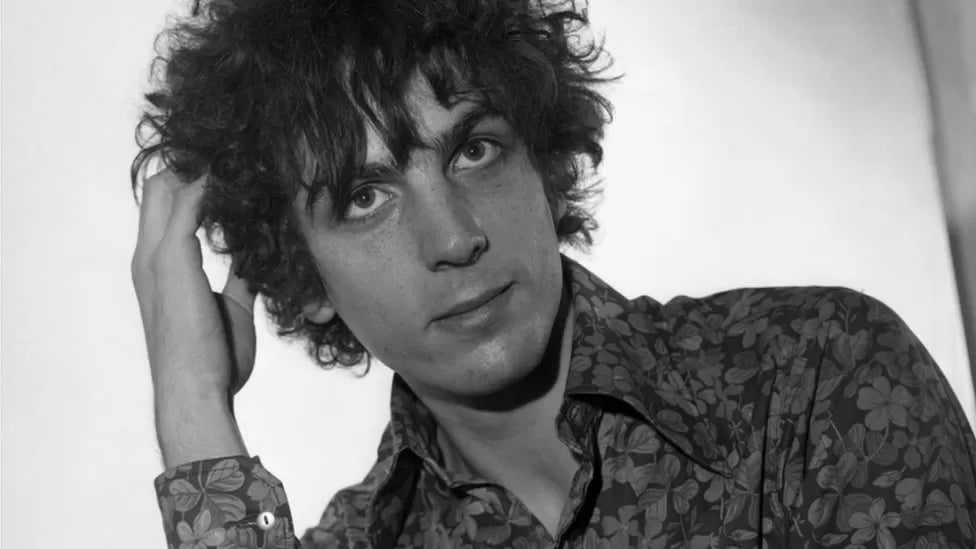

I membri inizialmente sono 4: Syd Barret, Nick Mason, Roger Waters, Richard Wright. Sucessivamente, dopo pochi anni dalla fondazione del gruppo, si aggiunge David Gilmour. Syd barret qualche anno dopo verrà espulso dal gruppo.
 



 
